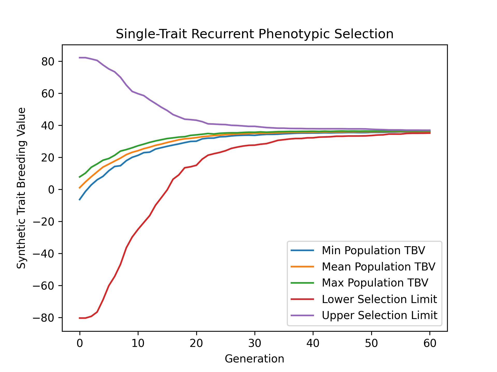

Single-Trait Phenotypic Selection#
Simulating the evolution of a single trait over many generations of selection is useful in aiding breeding program decisions. Simulations allow for the comparison of different breeding strategies, allowing for the best breeding strategy to be selected. In this example, we demonstrate how to perform a simple, single-trait breeding simulation where a simple phenotypic selection with non-overlapping generations is used.
Simulation Preliminaries#
Loading Required Modules and Seeding the global PRNG#
To begin, we import the various modules we will be used into the Python namespace. We also set the seed for our simulation so that we can replicate the results at a later time.
# import libraries
import numpy
import pandas
import pybrops
from matplotlib import pyplot
from pybrops.breed.prot.bv.MeanPhenotypicBreedingValue import MeanPhenotypicBreedingValue
from pybrops.breed.prot.mate.TwoWayCross import TwoWayCross
from pybrops.breed.prot.mate.TwoWayDHCross import TwoWayDHCross
from pybrops.breed.prot.pt.G_E_Phenotyping import G_E_Phenotyping
from pybrops.breed.prot.sel.EstimatedBreedingValueSelection import EstimatedBreedingValueSubsetSelection
from pybrops.model.gmod.DenseAdditiveLinearGenomicModel import DenseAdditiveLinearGenomicModel
from pybrops.opt.algo.SortingSubsetOptimizationAlgorithm import SortingSubsetOptimizationAlgorithm
from pybrops.popgen.gmap.HaldaneMapFunction import HaldaneMapFunction
from pybrops.popgen.gmap.StandardGeneticMap import StandardGeneticMap
from pybrops.popgen.gmat.DensePhasedGenotypeMatrix import DensePhasedGenotypeMatrix
# seed python random and numpy random
pybrops.core.random.prng.seed(648201539)
Loading Genetic Map Data from a Text File#
Next, we load genetic map data from a CSV-like file. In this example, we are using the US NAM genetic map constructed by McMullen et al. in 2009. The code below demonstrates how these data are read into a StandardGeneticMap object using the from_csv class method.
# read genetic map
gmap = StandardGeneticMap.from_csv(
"McMullen_2009_US_NAM.gmap",
vrnt_chrgrp_col = "chr",
vrnt_phypos_col = "pos",
vrnt_genpos_col = "cM",
vrnt_genpos_units = "cM",
auto_group = True,
auto_build_spline = True,
sep = "\t",
header = 0,
)
Creating a Genetic Map Function#
After loading our genetic map data, we want to create a genetic map function object which will be used to calculate recombination probabilities for our simulations. We create a simple Haldane genetic map function using the HaldaneMapFunction class.
# use Haldane map function to calculate crossover probabilities
gmapfn = HaldaneMapFunction()
Loading Genome Data from a VCF File#
Next, we load phased genetic markers from a VCF file. In this example, we are using a subset of genetic markers from the Wisconsin Maize Diversity Panel, which is composed of 942 individuals. 2000 SNPs with a minor allele frequency greater than 0.2 have been randomly selected to keep the dataset small.
# read phased genetic markers from a vcf file
panel_pgmat = DensePhasedGenotypeMatrix.from_vcf(
"widiv_2000SNPs.vcf.gz", # file name to load
auto_group_vrnt = True, # automatically sort and group variants
)
After loading the genetic markers, we interpolate the genetic map positions and the sequential marker crossover probabilities using the interp_xoprob method. We interpolate using the genetic map and genetic map function we have just created.
# interpolate genetic map positions
panel_pgmat.interp_xoprob(gmap, gmapfn)
Constructing a Single-Trait Genomic Model#
Next, we want to construct a true genomic model that will model a single trait with a strictly additive genetic architecture. We construct a DenseAdditiveLinearGenomicModel object to do this.
# model intercepts: (1,ntrait)
beta = numpy.array([[0.0]], dtype = float)
# marker effects: (nvrnt,1)
mkreffect = numpy.random.normal(
loc = 0.0,
scale = 0.05,
size = (panel_pgmat.nvrnt,1)
)
# trait names: (ntrait,)
trait = numpy.array(["Syn1"], dtype = object)
# create an additive linear genomic model to model traits
algmod = DenseAdditiveLinearGenomicModel(
beta = beta, # model intercepts
u_misc = None, # miscellaneous random effects
u_a = mkreffect, # random marker effects
trait = trait, # trait names
model_name = "synthetic_model", # name of the model
hyperparams = None # model parameters
)
Simulation Burn-in#
Select founders and randomly intermate for 20 generations#
Before we begin our simulation, we’ll want to do a burn-in. The purpose of a burn-in is to create a set of genotypes with a population structure that is realistic to our desired simulation starting conditions. If one is using real data from a breeding program, this step may not be necessary. In other scenarios, it may be necessary to simulate a couple of generations of selection to create linkage block patterns akin to those found in a real breeding program. In the example below, we randomly select 40 founders from the individuals in the diversity panel data and conduct random mating for 20 generations. This simulates the creation of an open pollinated variety. After the 20 generations of random mating, we create doubled haploids from the population to serve as our starting breeding population for our simulation.
# founder population parameters
nfndr = 40 # number of random founders to select (must be even)
fndr_nmating = 1 # number of times to perform cross configuration (only needed for 3+ way crosses)
fndr_nprogeny = 80 # number of progenies to derive from cross configuration
fndr_nrandmate = 20 # number of random mating generations
# create 2-way cross object
mate2way = TwoWayCross()
# randomly select and pair ``nfndr`` founders
xconfig = numpy.random.choice(panel_pgmat.ntaxa,nfndr).reshape(nfndr//2,2)
# randomly intermate ``nfndr`` founders to create initial hybrids
fndr_pgmat = mate2way.mate(
pgmat = panel_pgmat,
xconfig = xconfig,
nmating = fndr_nmating,
nprogeny = fndr_nprogeny,
)
# randomly intermate for ``fndr_nrandmate`` generations
# each individual in the population is randomly mated with another individual
# and creates a single progeny so that the population size is held constant
for _ in range(fndr_nrandmate):
# get the number of taxa
ntaxa = fndr_pgmat.ntaxa
# randomly select and pair ``ntaxa`` parents
xconfig = numpy.empty((ntaxa,2), dtype = int)
xconfig[:,0] = numpy.random.choice(ntaxa, ntaxa, replace = False)
xconfig[:,1] = numpy.random.choice(ntaxa, ntaxa, replace = False)
# randomly intermate ``ntaxa`` parents
fndr_pgmat = mate2way.mate(
pgmat = fndr_pgmat,
xconfig = xconfig,
nmating = 1,
nprogeny = 1,
)
# create a 2-way DH cross object, use the counters from the 2-way cross object
mate2waydh = TwoWayDHCross(
progeny_counter = mate2way.progeny_counter,
family_counter = mate2way.family_counter,
)
# get the number of taxa
ntaxa = fndr_pgmat.ntaxa
# randomly select and pair ``ntaxa`` parents
xconfig = numpy.empty((ntaxa,2), dtype = int)
xconfig[:,0] = numpy.random.choice(ntaxa, ntaxa, replace = False)
xconfig[:,1] = numpy.random.choice(ntaxa, ntaxa, replace = False)
# DH all individuals in the founder population to create our initial breeding population
pgmat = mate2waydh.mate(
pgmat = fndr_pgmat,
xconfig = xconfig,
nmating = 1,
nprogeny = 1,
)
Simulate phenotypic selection for 60 generations#
Create a Phenotyping Protocol Object#
After creating our starting breeding population, we’ll want to create a phenotyping protocol object to phenotype the individuals in our population. We’ll create a \(G + E\) phenotyping protocol that simulates the phenotyping of individuals in multiple environments, without \(G \times E\) interactions. In the example below, we create a G_E_Phenotyping object where we test genotypes in 4 environments, each environment having 1 replication.
# create a phenotyping protocol object to simulate 4 environments with 1 rep each
ptprot = G_E_Phenotyping(
gpmod = algmod,
nenv = 4,
nrep = 1,
)
To finalize construction of our phenotyping protocol object, we’ll set the narrow sense heritability for a single observation using our starting breeding population.
# set the trait heritability using the initial population
# initial population fits heritability assumptions of being randomly mated
ptprot.set_h2(0.4, pgmat)
Create a Breeding Value Estimation Protocol Object#
Next, we’ll create a breeding value estimation object to take phenotypes simulated by our G_E_Phenotyping object and transform them into estimated breeding values. For this example, we’ll simply calculate breeding values using the mean phenotypic value since our individuals are all inbred and we have no \(G \times E\) effects.
# estimate breeding value using mean across environments for simplicity
bvprot = MeanPhenotypicBreedingValue(
taxa_col = "taxa",
taxa_grp_col = "taxa_grp",
trait_cols = "Syn1",
)
Create a Selection Protocol Object#
Next, we’ll want to create a selection protocol object to select based on estimated breeding values. For this selection problem, we can use a sorting algorithm to quickly identify the best individuals. Below, we create an optimization algorithm which does this.
# use a hillclimber for the single-objective optimization algorithm
# this is a very general algorithm and may not be the most efficient for
# all single-objective optimizations
soalgo = SortingSubsetOptimizationAlgorithm()
After creating a custom optimization algorithm, we construct our selection protocol object. For this simulation, we want to select the top 40 individuals and pair them into 20 two-way crosses. Each cross will generate 80 progenies. We’ll optimize using the sorting algorithm we created above.
# create a selection protocol that selects based on EBVs
selprot = EstimatedBreedingValueSubsetSelection(
ntrait = 1, # number of expected traits
ncross = 20, # number of cross configurations
nparent = 2, # number of parents per cross configuration
nmating = 1, # number of matings per cross configuration
nprogeny = 80, # number of progeny per mating event
nobj = 1, # number of objectives == ntrait
soalgo = soalgo, # use hillclimber to solve single-objective problem
)
Rudimentary Logbook#
Next, we’ll create a dictionary that will serve as a rudimentary logbook for our simulations.
# make a dictionary logbook
lbook = {
"gen" : [],
"meh" : [],
"lsl" : [],
"usl" : [],
"tbv_min_Syn1" : [],
"tbv_mean_Syn1" : [],
"tbv_max_Syn1" : [],
"tbv_std_Syn1" : [],
"ebv_min_Syn1" : [],
"ebv_mean_Syn1" : [],
"ebv_max_Syn1" : [],
"ebv_std_Syn1" : [],
}
Simulation Initialization#
Before we can jump into the main loop for our simulations, we need to evaluate our simulated individuals and estimate breeding values. To do this, we use our phenotyping and breeding value estimation protocols. After evaluation, we calculate various metrics includeing mean expected heterozygosity, lower and upper selection limits, true breeding value min, mean, max, and standard deviation, and estimated breeding value min, mean, max, and standard deviation.
# initial phenotyping
pheno_df = ptprot.phenotype(pgmat)
# initial breeding value estimation
bvmat = bvprot.estimate(ptobj=pheno_df)
# log metrics
lbook["gen"].append(0)
lbook["meh"].append(pgmat.meh())
lbook["lsl"].append(algmod.lsl(pgmat)[0])
lbook["usl"].append(algmod.usl(pgmat)[0])
tbv = algmod.gebv(pgmat).unscale()
lbook["tbv_min_Syn1"].append(tbv.min(0)[0])
lbook["tbv_mean_Syn1"].append(tbv.mean(0)[0])
lbook["tbv_max_Syn1"].append(tbv.max(0)[0])
lbook["tbv_std_Syn1"].append(tbv.std(0)[0])
ebv = bvmat.unscale()
lbook["ebv_min_Syn1"].append(ebv.min(0)[0])
lbook["ebv_mean_Syn1"].append(ebv.mean(0)[0])
lbook["ebv_max_Syn1"].append(ebv.max(0)[0])
lbook["ebv_std_Syn1"].append(ebv.std(0)[0])
print("Gen: {0}".format(0))
Main Simulation Loop#
For our main simulation loop, we’ll do the same things we did in the initialization except we’ll add a selection and mating step before evaluating and recording metrics.
# number of generations for which to simulate selection
ngen = 60
# simulate for ``ngen`` generations
for gen in range(1,ngen+1):
# select individuals
selcfg = selprot.select(
pgmat = pgmat, # genomes from which to build SelectionConfiguration
gmat = None, # not required by this selection protocol
ptdf = None, # not required by this selection protocol
bvmat = bvmat, # breeding values (required)
gpmod = None, # not required by this selection protocol
t_cur = 0, # not required by this selection protocol
t_max = 0, # not required by this selection protocol
)
# mate individuals
pgmat = mate2waydh.mate(
pgmat = selcfg.pgmat,
xconfig = selcfg.xconfig,
nmating = selcfg.nmating,
nprogeny = selcfg.nprogeny,
)
# phenotype progenies
pheno_df = ptprot.phenotype(pgmat)
# estimate breeding values for progenies
bvmat = bvprot.estimate(ptobj=pheno_df)
# log metrics
lbook["gen"].append(gen)
lbook["meh"].append(pgmat.meh())
lbook["lsl"].append(algmod.lsl(pgmat)[0])
lbook["usl"].append(algmod.usl(pgmat)[0])
tbv = algmod.gebv(pgmat).unscale()
lbook["tbv_min_Syn1"].append(tbv.min(0)[0])
lbook["tbv_mean_Syn1"].append(tbv.mean(0)[0])
lbook["tbv_max_Syn1"].append(tbv.max(0)[0])
lbook["tbv_std_Syn1"].append(tbv.std(0)[0])
ebv = bvmat.unscale()
lbook["ebv_min_Syn1"].append(ebv.min(0)[0])
lbook["ebv_mean_Syn1"].append(ebv.mean(0)[0])
lbook["ebv_max_Syn1"].append(ebv.max(0)[0])
lbook["ebv_std_Syn1"].append(ebv.std(0)[0])
print("Gen: {0}".format(gen))
Saving Results to a File#
Finally, we’ll convert our rudimentary logbook dictionary into a Pandas DataFrame and export it to a CSV file for analysis.
# create output dataframe and save
lbook_df = pandas.DataFrame(lbook)
lbook_df.to_csv("lbook.csv", sep = ",", index = False)
Visualizing Breeding Program Simulation Results with matplotlib#
Visualizing True Breeding Values (TBVs)#
To visualize how true breeding values evolved over the course of our simulation, we’ll use matplotlib to plot the min, mean, and max true breeding values and compare them with the lower and upper selection limits. The code below demonstrates how to create this plot.
# create static figure
fig = pyplot.figure()
ax = pyplot.axes()
ax.plot(lbook_df["gen"], lbook_df["tbv_min_Syn1"], label = "Min Population TBV")
ax.plot(lbook_df["gen"], lbook_df["tbv_mean_Syn1"], label = "Mean Population TBV")
ax.plot(lbook_df["gen"], lbook_df["tbv_max_Syn1"], label = "Max Population TBV")
ax.plot(lbook_df["gen"], lbook_df["lsl"], label = "Lower Selection Limit")
ax.plot(lbook_df["gen"], lbook_df["usl"], label = "Upper Selection Limit")
ax.set_title("Single-Trait Recurrent Phenotypic Selection")
ax.set_xlabel("Generation")
ax.set_ylabel("Synthetic Trait Breeding Value")
ax.legend()
pyplot.savefig("single_trait_phenotypic_selection_true_breeding_values.png", dpi = 300)
pyplot.close(fig)
The image below is the result of the code above.
Visualizing Estimated Breeding Values (EBVs)#
To visualize how estimated breeding values evolved over the course of our simulation, we’ll use matplotlib to plot the min, mean, and max estimated breeding values and compare them with the lower and upper selection limits. The code below demonstrates how to create this plot.
# create static figure
fig = pyplot.figure()
ax = pyplot.axes()
ax.plot(lbook_df["gen"], lbook_df["ebv_min_Syn1"], label = "Min Population EBV")
ax.plot(lbook_df["gen"], lbook_df["ebv_mean_Syn1"], label = "Mean Population EBV")
ax.plot(lbook_df["gen"], lbook_df["ebv_max_Syn1"], label = "Max Population EBV")
ax.plot(lbook_df["gen"], lbook_df["lsl"], label = "Lower Selection Limit")
ax.plot(lbook_df["gen"], lbook_df["usl"], label = "Upper Selection Limit")
ax.set_title("Single-Trait Recurrent Phenotypic Selection")
ax.set_xlabel("Generation")
ax.set_ylabel("Synthetic Trait Breeding Value")
ax.legend()
pyplot.savefig("single_trait_phenotypic_selection_estimated_breeding_values.png", dpi = 300)
pyplot.close(fig)
The image below is the result of the code above.